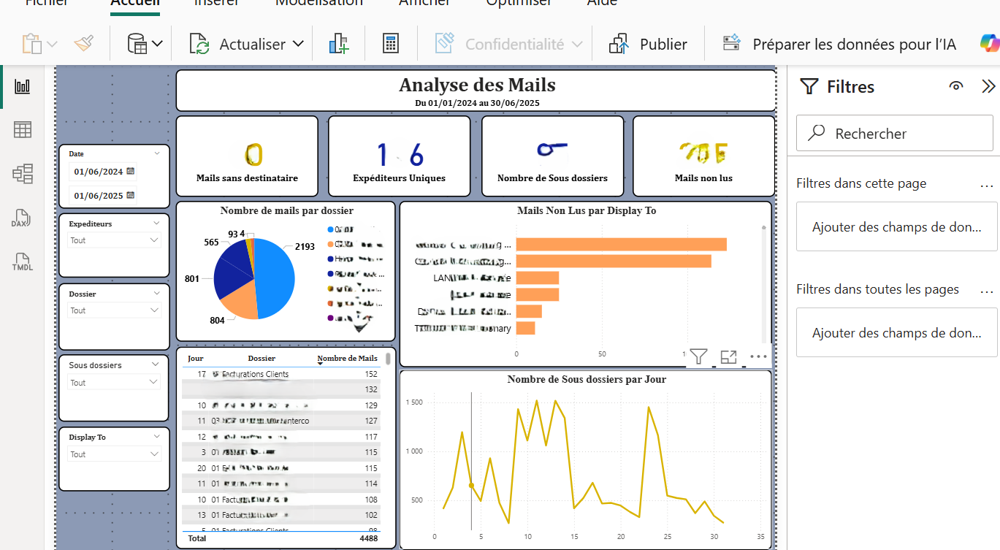
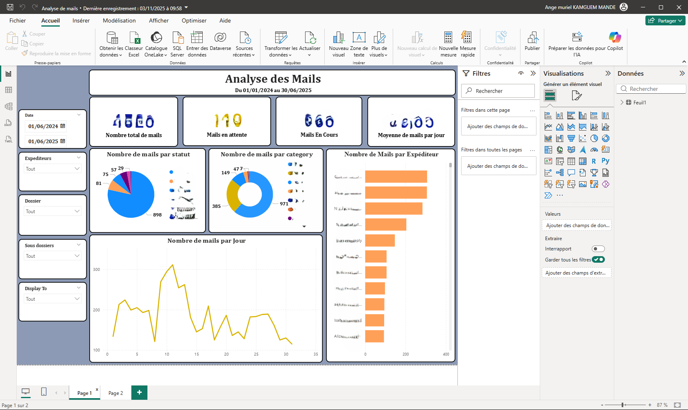

Analyse des Mails – Interactions & Suivi

🎯 Objectif :
Visualiser les flux d’e-mails internes, détecter les volumes anormaux, identifier les messages non lus
et comprendre les interactions entre les différentes équipes.
🚀 Particularité :
Dashboard construit à partir de fichiers Outlook exportés en Excel, nécessitant un nettoyage approfondi :
catégories multiples, champs “To” et “CC” combinés, classification automatique des expéditeurs, extraction des heures
pour une analyse temporelle fiable.
📊 Indicateurs & Insights :
- Nombre total de mails par dossier & sous-dossier
- Volume et proportion de mails non lus
- Top expéditeurs et top destinataires
- Activité quotidienne & hebdomadaire (heatmap)
- Segmentation par type de contenu
- Analyse du poids des pièces jointes
🛠 Outils & Méthodes :
Power BI (DAX, Power Query), traitements automatiques des champs Outlook,
modélisation du dataset, storytelling visuel et indicateurs intelligents.
IMPORTANT :
Pour des raisons de confidentialité, je ne peux pas partager le dashboard complet,
ni les données utilisées, car il s’agit d’informations sensibles analysées dans un cadre professionnel.
📸 Aperçu du Dashboard
